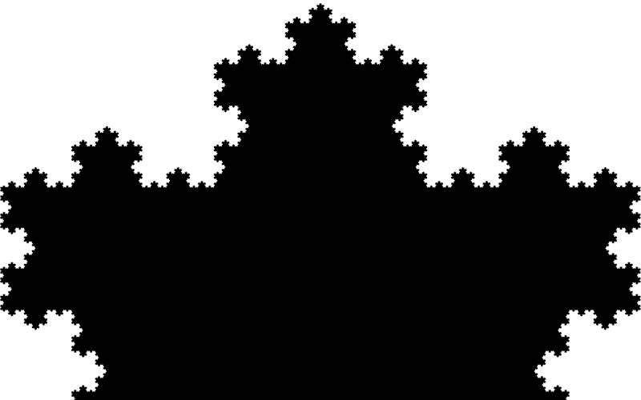

Das Koch Fraktal
Von Marvin Borner, TGI 12.1Gliederung
- Fraktale
- Koch Kurve
- Umfang
- Fläche
- Koch Schneeflocke
Fraktale
- Hohe Selbstähnlichkeit
- Mandelbrot
- Natur

Regeln
- Mit einer geraden Linie starten
- Linie in drei Teile aufteilen
- Den mittleren Teil der Linie "radieren"
- Den mittleren Teil zu einem gleichseitigen Dreieck verbinden
- Mit allen neuen Linien wiederholen
Selbstähnlichkeit
Umfang der Koch Kurve
Anzahl der Linien:
\[ N_n = N_{n-1} \cdot 4 = 4^n \]
Länge der Linien:
\[ S_n = \frac{S_{n-1}}{3} = \frac{s}{3^n} \]
Umfang:
\[ P_n = N_n\cdot S_n = s\cdot\left(\frac{4}{3}\right)^n \]
Grenzwert:
\[ \lim_{n\to\infty}P_n = \infty \]
Nebenrechnung
\[ N_n = N_{n-1} \cdot 4 = 4^n \]
\[ S_n = \frac{S_{n-1}}{3} = \frac{s}{3^n} \]
\[ P_n = N_n\cdot S_n = 4^n \cdot \frac{s}{3^n} = \frac{s \cdot 4^n}{3^n} = s \cdot \frac{4^n}{3^n} \]
Summenzeichen
\[ \sum_{x=1}^{5} x^2 \]
\[ = 1^2 + 2^2 + 3^2 + 4^2 + 5^2 = 55 \]
Fläche der Koch Kurve
\[ \frac{2s^2\sqrt{3}}{5} \]
Die Koch Schneeflocke
\[ P_n = \textcolor{red}{3} \cdot s \cdot \frac{4^n}{3^n} \]
Quellen
https://en.wikipedia.org/wiki/Koch_snowflake
https://de.wikipedia.org/wiki/Selbst%C3%A4hnlichkeit
http://www.mathematik.uni-ulm.de/stochastik/lehre/ws06_07/seminar_fraktale/daikeler.pdf